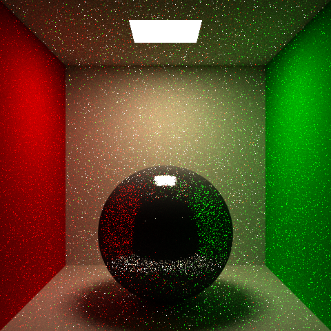
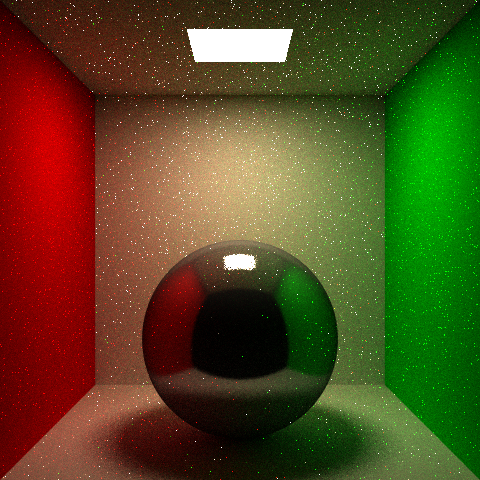
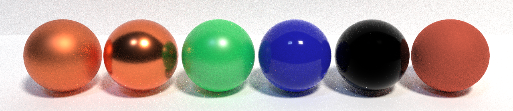
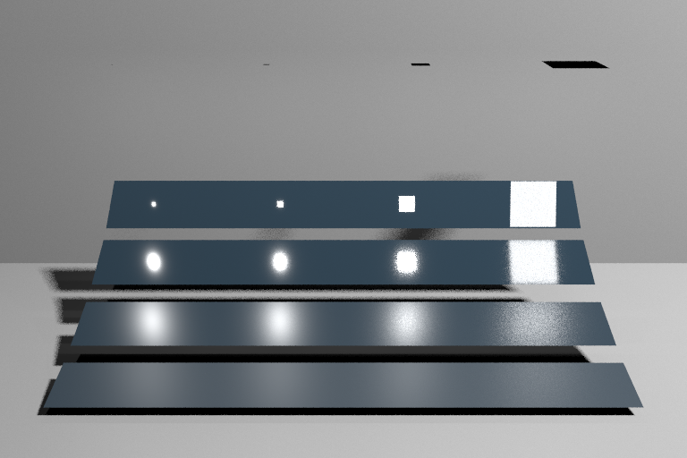
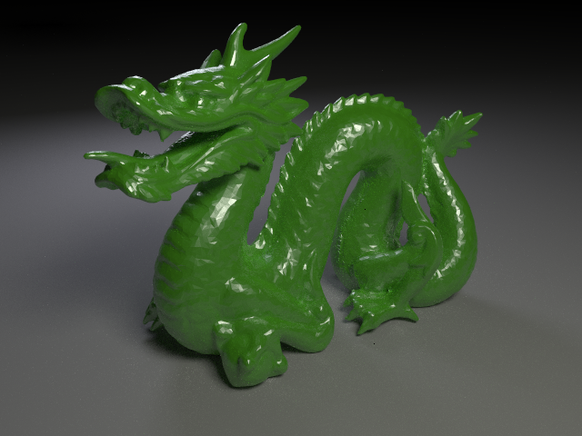
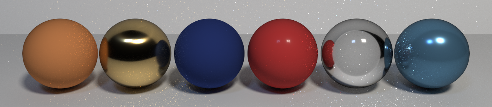

BRDF importance sampling with cosine-weighted, Phong, and GGX distributions, plus multiple importance sampling to combine BRDF sampling with next event estimation.
Rather than sampling directions uniformly over the hemisphere, indirect rays are
drawn proportional to the cosine of the angle with the surface normal. This exactly
cancels the cosine factor in the rendering equation, reducing the Monte Carlo weight
from 2π · f · cos(θ) to simply π · f. Because samples are
concentrated near the surface normal where diffuse surfaces contribute the most
energy, variance is reduced without introducing any bias.

cornellCosine.testThe modified Phong BRDF combines a diffuse Lambertian lobe with a specular lobe
proportional to cos^n(alpha), where alpha is the angle between the
reflected direction and the outgoing ray, and n is the shininess exponent.
Importance sampling draws directions directly from this distribution: diffuse and
specular lobes are selected stochastically by their relative energy, and within each
lobe a direction is sampled analytically using inversion. This concentrates samples
in the high-contribution regions of the BRDF, reducing variance on glossy surfaces
compared to cosine sampling alone. The Cornell box below uses the BRDF importance
sampler across all bounces.

cornellBRDF.test: modified Phong BRDF ISThe GGX microfacet model is a physically-based specular BRDF of the form
(F · G · D) / (4 · wiDotN · woDotN), where F is the Fresnel term, G is
the Smith shadowing-masking function, and D is the GGX normal distribution. Importance
sampling draws half-vectors directly from the GGX distribution, making specular
highlights converge rapidly at low sample counts. The roughness parameter
alpha controls the width of the lobe: near-zero values produce
mirror-like reflections while alpha approaching 1 gives a broad,
diffuse-like spread. Gamma correction (y = x^(1/gamma), gamma = 2.2) is
applied at save time to approximate sRGB output.

ggx.test: GGX microfacet BRDF IS, 64 spp, gamma = 2.2Next event estimation (NEE) works well on rough surfaces but produces high variance when a near-mirror surface reflects a large area light, because the probability of the NEE ray direction aligning with the narrow BRDF lobe is small. Conversely, BRDF importance sampling handles glossy reflections effortlessly but struggles with small or distant light sources that sampled rays rarely hit. Multiple importance sampling (MIS) combines both techniques at each intersection using the power heuristic with exponent β = 2:
w_i(ω) = pdf_i²(ω) / Σ_k pdf_k²(ω)
One NEE sample and one BRDF sample per light are drawn at every shading point, each weighted by the heuristic. The MIS scene contains four reflective panels with varying roughness and four light sources of varying size, making the tradeoffs of each technique immediately visible. MIS eliminates the failure modes of both methods simultaneously, as confirmed by the dragon scene rendered with full global illumination.

mis.test: multiple importance sampling, 32 spp
dragon.test: multiple importance sampling
The Disney principled BSDF extends the GGX microfacet framework into a
multi-lobe material model. Rather than exposing low-level optical parameters,
it exposes artist-friendly controls: metallic, roughness,
anisotropic, sheen, clearcoat,
transmission, and eta that interpolate smoothly
between five physically-based lobes. All lobes are integrated into the path
tracer via importance sampling: each lobe is selected stochastically
proportional to its energy weight, a direction is sampled from that lobe's
distribution, and the PDF is evaluated as the weighted sum across all lobes.
The five lobes are: a diffuse lobe with optional subsurface scattering approximation for soft, waxy surfaces; an anisotropic metal lobe using GGX with separate alpha values per axis, producing stretched highlights on brushed metal; a sheen lobe that adds a retro-reflective rim glow at grazing angles for velvet and cloth; a clearcoat lobe using a GTR1 distribution with a fixed IOR of 1.5, producing a sharp specular highlight on top of the base material like car paint; and a glass lobe implementing a rough dielectric BSDF with full Fresnel equations and GGX microfacets for both reflection and refraction.
Note: glass surfaces do not appear as transparent as expected because shadow rays cast from interior hit points are occluded by the sphere's own back face geometry. This is a known limitation of forward path tracing with NEE on transmissive surfaces.

Left to right: diffuse, metal, sheen, clearcoat, glass, full Disney mix at 512 spp